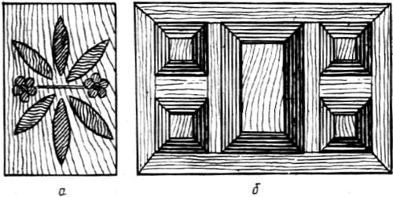
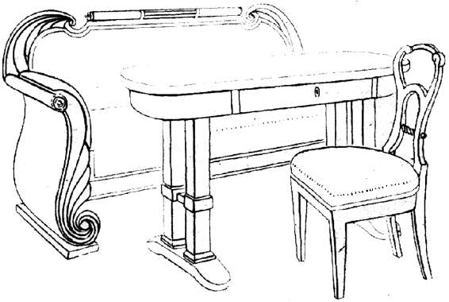

Виды композиций в мебельных изделиях.

Для создания композиции необходимо наличие как минимум двух элементов, иначе нечего будет соединять. Первый вид композиции называется плоскостной, он состоит из относительно плоских элементов, не выступающих один относительно другого за лицевую поверхность. К плоскостной композиции относится большинство орнаментальных композиций или орнаментов. В столярном деле такой вид представлен инкрустационными композициями типа маркетри.

Рис. 21. Плоскостная (а) и объемно-фронтальная (б) композиции
Если компонуются плоские рельефные детали, соединяемые на общей плоскости, в результате чего лицевая поверхность получает рельеф, такую композицию называют объемно-фронтальной (дверная резная филенка, деревянный потолок балочно-кессонной формы и т. п.). Объемно-фронтальная композиция смотрится из определенного положения: зритель должен находиться перед центром плоскости.
Плоскостные и объемно-фронтальные композиции в мебельных изделиях применяют на главных фасадных частях и в виде вставок.
Второй вид композиции складывается из объемов, связанных между собой. Если объемы приблизительно равного «звучания» размещены в разных уровнях и плоскостях по отношению один к другому, то композиция называется объемно-пространственной. Если на поверхности крупного объема находятся объемы значительно более мелкие, такая композиция называется объемной. Примерами объемно-пространственной композиции могут служить сервант, состоящий из нижнего подшкафника и группы верхних шкафов и ящиков разной формы, или туалетный стол с ящиками и зеркалом, а примерами объемной композиции – круглая колонка-подставка с рельефной поверхностью, стол с развитыми ножками Объемные композиции рассматривают со всех сторон как барельеф или скульптуру.
Третий вид композиции – глубинно-пространственный – представляет собой композиционную связь предмета с тем пространством, в котором размещен. Примером глубинно-пространственной композиции служит интерьер, заполненный мебелью. Глубинно-пространственную связь необходимо учитывать при разработке конкретного предмета, располагаемого в известном интерьере. Сказанное как раз и относится к человеку, который проектирует и делает мебель для своего дома.

Рис. 22. Глубинно-пространственная композиция
В мебельно-столярном деле этот вид композиции имеет особенно широкое распространение в виде гарнитуров и наборов мебели, предназначенных для одного помещения или располагаемых обособленно в его части. В таком комплекте центром композиции выбирается один предмет, например стенка, стол, буфет-сервант и т. п., остальные предметы служат как бы фоном для главного, подчеркивая его значимость.